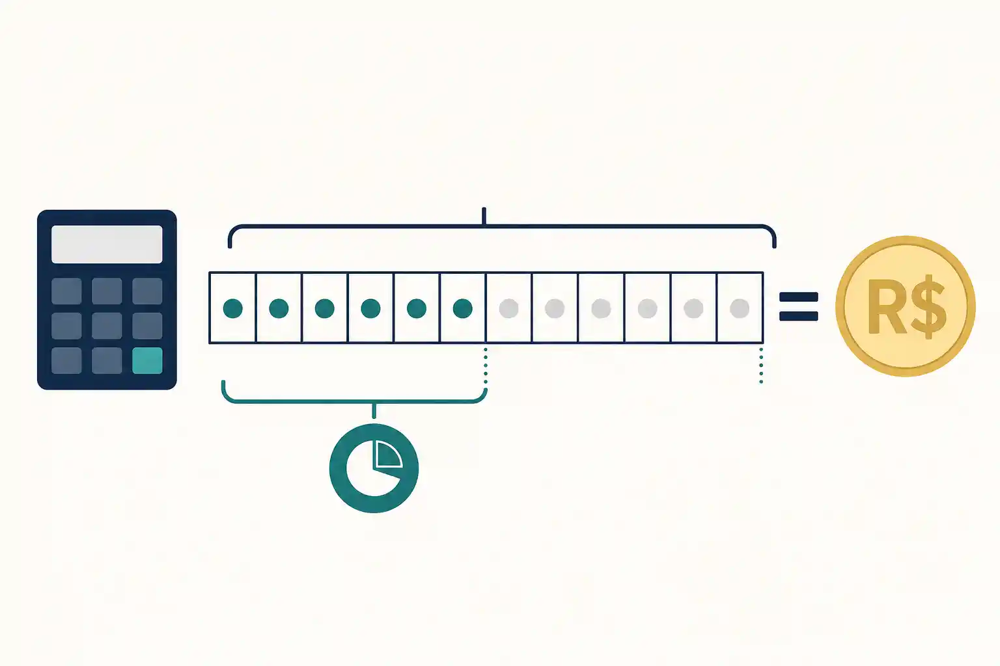

Calculo de Ferias Proporcionais 2026
Formula completa com exemplos, calculadora gratis e tudo sobre avos, rescisao e terco constitucional nas ferias proporcionais CLT.
Calculadora de Ferias Proporcionais
Insira seus dados e veja o resultado com terco constitucional
Detalhamento Passo a Passo
O Que Sao Ferias Proporcionais e Quando Se Aplicam

Ferias proporcionais sao a remuneracao das ferias que o trabalhador acumulou dentro de um periodo aquisitivo ainda nao completado. O periodo aquisitivo comeca na data de admissao e dura 12 meses. Cada mes trabalhado dentro desse ciclo gera 1 avo de direito a ferias. No encerramento do contrato, o trabalhador recebe o valor proporcional aos avos que acumulou, mesmo que o ciclo de 12 meses nao tenha sido concluido.
Tres conceitos diferentes que muita gente confunde: ferias proporcionais correspondem ao ciclo aquisitivo em andamento no momento da rescisao. Ferias vencidas sao ferias de um periodo aquisitivo ja completado que o empregador nao concedeu dentro do periodo concessivo de 12 meses seguintes. Ferias integrais representam 30 dias completos, quando o trabalhador concluiu o ciclo e nao teve faltas injustificadas suficientes para reduzir esse periodo. Esses tres itens aparecem em linhas separadas no TRCT.
O direito as ferias proporcionais existe nas seguintes situacoes: demissao sem justa causa, pedido de demissao, termino de contrato por prazo determinado, rescisao indireta e culpa reciproca. O unico caso em que o trabalhador perde esse direito e a demissao por justa causa, conforme o Art. 482 da CLT.
A Formula Passo a Passo
Avos, 2,5 dias e o terco constitucional
Cada mes trabalhado equivale a 1 avo, e cada avo representa 2,5 dias de ferias. A formula completa:
Formula das Ferias Proporcionais
Exemplos com Valores Reais
Exemplo 1: Salario R$ 1.412,00 | 5 meses trabalhados
Exemplo 2: Salario R$ 2.500,00 | 8 meses trabalhados
Exemplo 3: Salario R$ 5.000,00 | 10 meses trabalhados
Esses valores sao brutos. O desconto do INSS incide sobre eles. O IRRF depende do tipo de rescisao. Veja a secao de descontos abaixo.
Faltas Injustificadas Reduzem Seus Dias
O Art. 130 da CLT estabelece que o numero de dias de ferias diminui conforme as faltas injustificadas no periodo aquisitivo:
| Faltas injustificadas | Dias de ferias |
|---|---|
| 0 a 5 faltas | 30 dias |
| 6 a 14 faltas | 24 dias |
| 15 a 23 faltas | 18 dias |
| 24 a 32 faltas | 12 dias |
| Acima de 32 faltas | Perde o direito |
Com 10 faltas injustificadas, por exemplo, o calculo parte de 24 dias, nao de 30. O valor diario continua sendo o salario bruto dividido por 30, mas o total de dias muda.
Ferias Proporcionais na Rescisao por Tipo de Saida
Demissao sem justa causa
O trabalhador recebe as ferias proporcionais acrescidas do terco constitucional, mais as ferias vencidas se houver ciclo anterior nao gozado. O aviso previo indenizado projeta os dias para frente e conta como tempo de servico, adicionando ate 1 avo extra. Um trabalhador com 8 meses de casa e aviso previo indenizado de 30 dias alcanca 9 avos.
Trabalhadores com mais de um ano tem direito ao aviso previo proporcional: 30 dias mais 3 dias por ano de servico completo, limitado a 90 dias no total. Isso pode representar ate 3 avos extras nas ferias proporcionais.
Pedido de demissao: voce nao perde as ferias proporcionais
Existe um mito difundido de que quem pede demissao perde as ferias proporcionais. Isso esta errado. O Art. 147 da CLT garante o direito para quem pede demissao, desde que tenha cumprido mais de 12 meses. Para quem tem menos de 12 meses, o Art. 146 tambem assegura o pagamento proporcional.
O que muda: quem pede demissao nao recebe a multa de 40% sobre o FGTS nem seguro-desemprego. Mas as ferias proporcionais com terco constitucional permanecem intactas.
Demissao por justa causa: o unico caso em que voce perde
A demissao por justa causa, prevista no Art. 482 da CLT, e o unico cenario em que o trabalhador perde o direito as ferias proporcionais. Se voce foi demitido por justa causa mas o empregador tambem cometeu irregularidades, pode ser cabivel a rescisao indireta pelo Art. 483, recuperando todos os direitos. Na culpa reciproca, o trabalhador recebe 50% das verbas.
Descontos: INSS e IRRF Sobre Ferias Proporcionais
INSS
O INSS incide sobre as ferias proporcionais inclusive quando pagas na rescisao. A base e o valor bruto das ferias com o terco incluido. As aliquotas de 2026 seguem a tabela progressiva: 7,5% ate R$1.518; 9% ate R$2.793,88; 12% ate R$4.190,83; 14% ate R$8.157,41.
IRRF: distincao que a maioria ignora
As ferias proporcionais pagas na rescisao sao verba indenizatoria e estao isentas de IRRF, conforme o Art. 6, inciso V da Lei 7.713/1988 e jurisprudencia consolidada do STJ. As ferias gozadas durante o contrato ativo sofrem desconto de IRRF normalmente, porque nao tem carater indenizatorio.
Situacoes Especiais
Empregado domestico
O empregado domestico tem os mesmos direitos as ferias proporcionais desde a EC 72/2013 e a LC 150/2015. O calculo segue a mesma formula: avos, 2,5 dias por mes, terco constitucional.
Estagiario: recesso proporcional, nao ferias CLT
O estagiario tem direito ao recesso remunerado pela Lei 11.788/2008. A proporcao e a mesma (2,5 dias por mes), mas nao ha terco constitucional obrigatorio, nao incide IRRF e o vinculo nao gera FGTS.
Contrato de experiencia e prazo determinado
Ao termino do contrato, o trabalhador recebe ferias proporcionais normalmente. Se encerrado antes do prazo pelo empregador, recebe tambem a indenizacao do Art. 479 da CLT.
Comissionados e salario variavel
Trabalhadores com salario variavel usam a media dos 12 meses anteriores como base, conforme o Art. 142 da CLT. Se sua empresa calculou ferias apenas sobre o salario fixo e voce recebe comissao, o calculo esta errado.
Como Verificar Seu TRCT
5 Passos Para Conferir Antes de Assinar
Perguntas Frequentes Sobre Ferias Proporcionais
Conclusao
O calculo de ferias proporcionais segue uma logica direta: meses trabalhados no periodo aquisitivo geram avos, cada avo vale 2,5 dias, e o terco constitucional incide sempre. Conhecer essa formula coloca o trabalhador em posicao de verificar o proprio TRCT antes de assinar, e isso pode representar centenas ou milhares de reais a mais no bolso.
Situacoes como aviso previo indenizado, faltas injustificadas, salario variavel e tipo de rescisao alteram o resultado final. Use a calculadora de ferias para o seu caso especifico, confira os dados no seu TRCT e, se encontrar divergencia, voce ja tem o argumento tecnico e as referencias legais para questionar. Veja tambem nosso guia sobre calculo de ferias por periodo para entender ferias fracionadas.
Calcule Suas Ferias Proporcionais Agora
Insira seu salario e os meses trabalhados para ver o valor exato com terco constitucional.
Usar a Calculadora